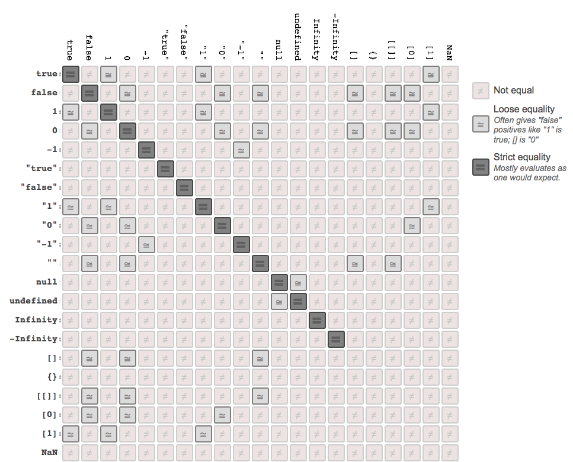

You Don't Know JS: Types & Grammar
Chapter 4: Coercion
Now that we much more fully understand JavaScript's types and values, we turn our attention to a very controversial topic: coercion.
As we mentioned in Chapter 1, the debates over whether coercion is a useful feature or a flaw in the design of the language (or somewhere in between!) have raged since day one. If you've read other popular books on JS, you know that the overwhelmingly prevalent message out there is that coercion is magical, evil, confusing, and just downright a bad idea.
In the same overall spirit of this book series, rather than running away from coercion because everyone else does, or because you get bitten by some quirk, I think you should run toward that which you don't understand and seek to get it more fully.
Our goal is to fully explore the pros and cons (yes, there are pros!) of coercion, so that you can make an informed decision on its appropriateness in your program.
Converting Values
Converting a value from one type to another is often called "type casting," when done explicitly, and "coercion" when done implicitly (forced by the rules of how a value is used).
Note: It may not be obvious, but JavaScript coercions always result in one of the scalar primitive (see Chapter 2) values, like string, number, or boolean. There is no coercion that results in a complex value like object or function. Chapter 3 covers "boxing," which wraps scalar primitive values in their object counterparts, but this is not really coercion in an accurate sense.
Another way these terms are often distinguished is as follows: "type casting" (or "type conversion") occur in statically typed languages at compile time, while "type coercion" is a runtime conversion for dynamically typed languages.
However, in JavaScript, most people refer to all these types of conversions as coercion, so the way I prefer to distinguish is to say "implicit coercion" vs. "explicit coercion."
The difference should be obvious: "explicit coercion" is when it is obvious from looking at the code that a type conversion is intentionally occurring, whereas "implicit coercion" is when the type conversion will occur as a less obvious side effect of some other intentional operation.
For example, consider these two approaches to coercion:
var a = 42;
var b = a + ""; // implicit coercion
var c = String( a ); // explicit coercion
For b, the coercion that occurs happens implicitly, because the + operator combined with one of the operands being a string value ("") will insist on the operation being a string concatenation (adding two strings together), which as a (hidden) side effect will force the 42 value in a to be coerced to its string equivalent: "42".
By contrast, the String(..) function makes it pretty obvious that it's explicitly taking the value in a and coercing it to a string representation.
Both approaches accomplish the same effect: "42" comes from 42. But it's the how that is at the heart of the heated debates over JavaScript coercion.
Note: Technically, there's some nuanced behavioral difference here beyond the stylistic difference. We cover that in more detail later in the chapter, in the "Implicitly: Strings <--> Numbers" section.
The terms "explicit" and "implicit," or "obvious" and "hidden side effect," are relative.
If you know exactly what a + "" is doing and you're intentionally doing that to coerce to a string, you might feel the operation is sufficiently "explicit." Conversely, if you've never seen the String(..) function used for string coercion, its behavior might seem hidden enough as to feel "implicit" to you.
But we're having this discussion of "explicit" vs. "implicit" based on the likely opinions of an average, reasonably informed, but not expert or JS specification devotee developer. To whatever extent you do or do not find yourself fitting neatly in that bucket, you will need to adjust your perspective on our observations here accordingly.
Just remember: it's often rare that we write our code and are the only ones who ever read it. Even if you're an expert on all the ins and outs of JS, consider how a less experienced teammate of yours will feel when they read your code. Will it be "explicit" or "implicit" to them in the same way it is for you?
Abstract Value Operations
Before we can explore explicit vs implicit coercion, we need to learn the basic rules that govern how values become either a string, number, or boolean. The ES5 spec in section 9 defines several "abstract operations" (fancy spec-speak for "internal-only operation") with the rules of value conversion. We will specifically pay attention to: ToString, ToNumber, and ToBoolean, and to a lesser extent, ToPrimitive.
ToString
When any non-string value is coerced to a string representation, the conversion is handled by the ToString abstract operation in section 9.8 of the specification.
Built-in primitive values have natural stringification: null becomes "null", undefined becomes "undefined" and true becomes "true". numbers are generally expressed in the natural way you'd expect, but as we discussed in Chapter 2, very small or very large numbers are represented in exponent form:
// multiplying `1.07` by `1000`, seven times over
var a = 1.07 * 1000 * 1000 * 1000 * 1000 * 1000 * 1000 * 1000;
// seven times three digits => 21 digits
a.toString(); // "1.07e21"
For regular objects, unless you specify your own, the default toString() (located in Object.prototype.toString()) will return the internal [[Class]] (see Chapter 3), like for instance "[object Object]".
But as shown earlier, if an object has its own toString() method on it, and you use that object in a string-like way, its toString() will automatically be called, and the string result of that call will be used instead.
Note: The way an object is coerced to a string technically goes through the ToPrimitive abstract operation (ES5 spec, section 9.1), but those nuanced details are covered in more detail in the ToNumber section later in this chapter, so we will skip over them here.
Arrays have an overridden default toString() that stringifies as the (string) concatenation of all its values (each stringified themselves), with "," in between each value:
var a = [1,2,3];
a.toString(); // "1,2,3"
Again, toString() can either be called explicitly, or it will automatically be called if a non-string is used in a string context.
JSON Stringification
Another task that seems awfully related to ToString is when you use the JSON.stringify(..) utility to serialize a value to a JSON-compatible string value.
It's important to note that this stringification is not exactly the same thing as coercion. But since it's related to the ToString rules above, we'll take a slight diversion to cover JSON stringification behaviors here.
For most simple values, JSON stringification behaves basically the same as toString() conversions, except that the serialization result is always a string:
JSON.stringify( 42 ); // "42"
JSON.stringify( "42" ); // ""42"" (a string with a quoted string value in it)
JSON.stringify( null ); // "null"
JSON.stringify( true ); // "true"
Any JSON-safe value can be stringified by JSON.stringify(..). But what is JSON-safe? Any value that can be represented validly in a JSON representation.
It may be easier to consider values that are not JSON-safe. Some examples: undefineds, functions, (ES6+) symbols, and objects with circular references (where property references in an object structure create a never-ending cycle through each other). These are all illegal values for a standard JSON structure, mostly because they aren't portable to other languages that consume JSON values.
The JSON.stringify(..) utility will automatically omit undefined, function, and symbol values when it comes across them. If such a value is found in an array, that value is replaced by null (so that the array position information isn't altered). If found as a property of an object, that property will simply be excluded.
Consider:
JSON.stringify( undefined ); // undefined
JSON.stringify( function(){} ); // undefined
JSON.stringify( [1,undefined,function(){},4] ); // "[1,null,null,4]"
JSON.stringify( { a:2, b:function(){} } ); // "{"a":2}"
But if you try to JSON.stringify(..) an object with circular reference(s) in it, an error will be thrown.
JSON stringification has the special behavior that if an object value has a toJSON() method defined, this method will be called first to get a value to use for serialization.
If you intend to JSON stringify an object that may contain illegal JSON value(s), or if you just have values in the object that aren't appropriate for the serialization, you should define a toJSON() method for it that returns a JSON-safe version of the object.
For example:
var o = { };
var a = {
b: 42,
c: o,
d: function(){}
};
// create a circular reference inside `a`
o.e = a;
// would throw an error on the circular reference
// JSON.stringify( a );
// define a custom JSON value serialization
a.toJSON = function() {
// only include the `b` property for serialization
return { b: this.b };
};
JSON.stringify( a ); // "{"b":42}"
It's a very common misconception that toJSON() should return a JSON stringification representation. That's probably incorrect, unless you're wanting to actually stringify the string itself (usually not!). toJSON() should return the actual regular value (of whatever type) that's appropriate, and JSON.stringify(..) itself will handle the stringification.
In other words, toJSON() should be interpreted as "to a JSON-safe value suitable for stringification," not "to a JSON string" as many developers mistakenly assume.
Consider:
var a = {
val: [1,2,3],
// probably correct!
toJSON: function(){
return this.val.slice( 1 );
}
};
var b = {
val: [1,2,3],
// probably incorrect!
toJSON: function(){
return "[" +
this.val.slice( 1 ).join() +
"]";
}
};
JSON.stringify( a ); // "[2,3]"
JSON.stringify( b ); // ""[2,3]""
In the second call, we stringified the returned string rather than the array itself, which was probably not what we wanted to do.
While we're talking about JSON.stringify(..), let's discuss some lesser-known functionalities that can still be very useful.
An optional second argument can be passed to JSON.stringify(..) that is called replacer. This argument can either be an array or a function. It's used to customize the recursive serialization of an object by providing a filtering mechanism for which properties should and should not be included, in a similar way to how toJSON() can prepare a value for serialization.
If replacer is an array, it should be an array of strings, each of which will specify a property name that is allowed to be included in the serialization of the object. If a property exists that isn't in this list, it will be skipped.
If replacer is a function, it will be called once for the object itself, and then once for each property in the object, and each time is passed two arguments, key and value. To skip a key in the serialization, return undefined. Otherwise, return the value provided.
var a = {
b: 42,
c: "42",
d: [1,2,3]
};
JSON.stringify( a, ["b","c"] ); // "{"b":42,"c":"42"}"
JSON.stringify( a, function(k,v){
if (k !== "c") return v;
} );
// "{"b":42,"d":[1,2,3]}"
Note: In the function replacer case, the key argument k is undefined for the first call (where the a object itself is being passed in). The if statement filters out the property named "c". Stringification is recursive, so the [1,2,3] array has each of its values (1, 2, and 3) passed as v to replacer, with indexes (0, 1, and 2) as k.
A third optional argument can also be passed to JSON.stringify(..), called space, which is used as indentation for prettier human-friendly output. space can be a positive integer to indicate how many space characters should be used at each indentation level. Or, space can be a string, in which case up to the first ten characters of its value will be used for each indentation level.
var a = {
b: 42,
c: "42",
d: [1,2,3]
};
JSON.stringify( a, null, 3 );
// "{
// "b": 42,
// "c": "42",
// "d": [
// 1,
// 2,
// 3
// ]
// }"
JSON.stringify( a, null, "-----" );
// "{
// -----"b": 42,
// -----"c": "42",
// -----"d": [
// ----------1,
// ----------2,
// ----------3
// -----]
// }"
Remember, JSON.stringify(..) is not directly a form of coercion. We covered it here, however, for two reasons that relate its behavior to ToString coercion:
string,number,boolean, andnullvalues all stringify for JSON basically the same as how they coerce tostringvalues via the rules of theToStringabstract operation.- If you pass an
objectvalue toJSON.stringify(..), and thatobjecthas atoJSON()method on it,toJSON()is automatically called to (sort of) "coerce" the value to be JSON-safe before stringification.
ToNumber
If any non-number value is used in a way that requires it to be a number, such as a mathematical operation, the ES5 spec defines the ToNumber abstract operation in section 9.3.
For example, true becomes 1 and false becomes 0. undefined becomes NaN, but (curiously) null becomes 0.
ToNumber for a string value essentially works for the most part like the rules/syntax for numeric literals (see Chapter 3). If it fails, the result is NaN (instead of a syntax error as with number literals). One example difference is that 0-prefixed octal numbers are not handled as octals (just as normal base-10 decimals) in this operation, though such octals are valid as number literals (see Chapter 2).
Note: The differences between number literal grammar and ToNumber on a string value are subtle and highly nuanced, and thus will not be covered further here. Consult section 9.3.1 of the ES5 spec for more information.
Objects (and arrays) will first be converted to their primitive value equivalent, and the resulting value (if a primitive but not already a number) is coerced to a number according to the ToNumber rules just mentioned.
To convert to this primitive value equivalent, the ToPrimitive abstract operation (ES5 spec, section 9.1) will consult the value (using the internal DefaultValue operation -- ES5 spec, section 8.12.8) in question to see if it has a valueOf() method. If valueOf() is available and it returns a primitive value, that value is used for the coercion. If not, but toString() is available, it will provide the value for the coercion.
If neither operation can provide a primitive value, a TypeError is thrown.
As of ES5, you can create such a noncoercible object -- one without valueOf() and toString() -- if it has a null value for its [[Prototype]], typically created with Object.create(null). See the this & Object Prototypes title of this series for more information on [[Prototype]]s.
Note: We cover how to coerce to numbers later in this chapter in detail, but for this next code snippet, just assume the Number(..) function does so.
Consider:
var a = {
valueOf: function(){
return "42";
}
};
var b = {
toString: function(){
return "42";
}
};
var c = [4,2];
c.toString = function(){
return this.join( "" ); // "42"
};
Number( a ); // 42
Number( b ); // 42
Number( c ); // 42
Number( "" ); // 0
Number( [] ); // 0
Number( [ "abc" ] ); // NaN
ToBoolean
Next, let's have a little chat about how booleans behave in JS. There's lots of confusion and misconception floating out there around this topic, so pay close attention!
First and foremost, JS has actual keywords true and false, and they behave exactly as you'd expect of boolean values. It's a common misconception that the values 1 and 0 are identical to true/false. While that may be true in other languages, in JS the numbers are numbers and the booleans are booleans. You can coerce 1 to true (and vice versa) or 0 to false (and vice versa). But they're not the same.
Falsy Values
But that's not the end of the story. We need to discuss how values other than the two booleans behave whenever you coerce to their boolean equivalent.
All of JavaScript's values can be divided into two categories:
- values that will become
falseif coerced toboolean - everything else (which will obviously become
true)
I'm not just being facetious. The JS spec defines a specific, narrow list of values that will coerce to false when coerced to a boolean value.
How do we know what the list of values is? In the ES5 spec, section 9.2 defines a ToBoolean abstract operation, which says exactly what happens for all the possible values when you try to coerce them "to boolean."
From that table, we get the following as the so-called "falsy" values list:
undefinednullfalse+0,-0, andNaN""
That's it. If a value is on that list, it's a "falsy" value, and it will coerce to false if you force a boolean coercion on it.
By logical conclusion, if a value is not on that list, it must be on another list, which we call the "truthy" values list. But JS doesn't really define a "truthy" list per se. It gives some examples, such as saying explicitly that all objects are truthy, but mostly the spec just implies: anything not explicitly on the falsy list is therefore truthy.
Falsy Objects
Wait a minute, that section title even sounds contradictory. I literally just said the spec calls all objects truthy, right? There should be no such thing as a "falsy object."
What could that possibly even mean?
You might be tempted to think it means an object wrapper (see Chapter 3) around a falsy value (such as "", 0 or false). But don't fall into that trap.
Note: That's a subtle specification joke some of you may get.
Consider:
var a = new Boolean( false );
var b = new Number( 0 );
var c = new String( "" );
We know all three values here are objects (see Chapter 3) wrapped around obviously falsy values. But do these objects behave as true or as false? That's easy to answer:
var d = Boolean( a && b && c );
d; // true
So, all three behave as true, as that's the only way d could end up as true.
Tip: Notice the Boolean( .. ) wrapped around the a && b && c expression -- you might wonder why that's there. We'll come back to that later in this chapter, so make a mental note of it. For a sneak-peek (trivia-wise), try for yourself what d will be if you just do d = a && b && c without the Boolean( .. ) call!
So, if "falsy objects" are not just objects wrapped around falsy values, what the heck are they?
The tricky part is that they can show up in your JS program, but they're not actually part of JavaScript itself.
What!?
There are certain cases where browsers have created their own sort of exotic values behavior, namely this idea of "falsy objects," on top of regular JS semantics.
A "falsy object" is a value that looks and acts like a normal object (properties, etc.), but when you coerce it to a boolean, it coerces to a false value.
Why!?
The most well-known case is document.all: an array-like (object) provided to your JS program by the DOM (not the JS engine itself), which exposes elements in your page to your JS program. It used to behave like a normal object--it would act truthy. But not anymore.
document.all itself was never really "standard" and has long since been deprecated/abandoned.
"Can't they just remove it, then?" Sorry, nice try. Wish they could. But there's far too many legacy JS code bases out there that rely on using it.
So, why make it act falsy? Because coercions of document.all to boolean (like in if statements) were almost always used as a means of detecting old, nonstandard IE.
IE has long since come up to standards compliance, and in many cases is pushing the web forward as much or more than any other browser. But all that old if (document.all) { /* it's IE */ } code is still out there, and much of it is probably never going away. All this legacy code is still assuming it's running in decade-old IE, which just leads to bad browsing experience for IE users.
So, we can't remove document.all completely, but IE doesn't want if (document.all) { .. } code to work anymore, so that users in modern IE get new, standards-compliant code logic.
"What should we do?" **"I've got it! Let's bastardize the JS type system and pretend that document.all is falsy!"
Ugh. That sucks. It's a crazy gotcha that most JS developers don't understand. But the alternative (doing nothing about the above no-win problems) sucks just a little bit more.
So... that's what we've got: crazy, nonstandard "falsy objects" added to JavaScript by the browsers. Yay!
Truthy Values
Back to the truthy list. What exactly are the truthy values? Remember: a value is truthy if it's not on the falsy list.
Consider:
var a = "false";
var b = "0";
var c = "''";
var d = Boolean( a && b && c );
d;
What value do you expect d to have here? It's gotta be either true or false.
It's true. Why? Because despite the contents of those string values looking like falsy values, the string values themselves are all truthy, because "" is the only string value on the falsy list.
What about these?
var a = []; // empty array -- truthy or falsy?
var b = {}; // empty object -- truthy or falsy?
var c = function(){}; // empty function -- truthy or falsy?
var d = Boolean( a && b && c );
d;
Yep, you guessed it, d is still true here. Why? Same reason as before. Despite what it may seem like, [], {}, and function(){} are not on the falsy list, and thus are truthy values.
In other words, the truthy list is infinitely long. It's impossible to make such a list. You can only make a finite falsy list and consult it.
Take five minutes, write the falsy list on a post-it note for your computer monitor, or memorize it if you prefer. Either way, you'll easily be able to construct a virtual truthy list whenever you need it by simply asking if it's on the falsy list or not.
The importance of truthy and falsy is in understanding how a value will behave if you coerce it (either explicitly or implicitly) to a boolean value. Now that you have those two lists in mind, we can dive into coercion examples themselves.
Explicit Coercion
Explicit coercion refers to type conversions that are obvious and explicit. There's a wide range of type conversion usage that clearly falls under the explicit coercion category for most developers.
The goal here is to identify patterns in our code where we can make it clear and obvious that we're converting a value from one type to another, so as to not leave potholes for future developers to trip into. The more explicit we are, the more likely someone later will be able to read our code and understand without undue effort what our intent was.
It would be hard to find any salient disagreements with explicit coercion, as it most closely aligns with how the commonly accepted practice of type conversion works in statically typed languages. As such, we'll take for granted (for now) that explicit coercion can be agreed upon to not be evil or controversial. We'll revisit this later, though.
Explicitly: Strings <--> Numbers
We'll start with the simplest and perhaps most common coercion operation: coercing values between string and number representation.
To coerce between strings and numbers, we use the built-in String(..) and Number(..) functions (which we referred to as "native constructors" in Chapter 3), but very importantly, we do not use the new keyword in front of them. As such, we're not creating object wrappers.
Instead, we're actually explicitly coercing between the two types:
var a = 42;
var b = String( a );
var c = "3.14";
var d = Number( c );
b; // "42"
d; // 3.14
String(..) coerces from any other value to a primitive string value, using the rules of the ToString operation discussed earlier. Number(..) coerces from any other value to a primitive number value, using the rules of the ToNumber operation discussed earlier.
I call this explicit coercion because in general, it's pretty obvious to most developers that the end result of these operations is the applicable type conversion.
In fact, this usage actually looks a lot like it does in some other statically typed languages.
For example, in C/C++, you can say either (int)x or int(x), and both will convert the value in x to an integer. Both forms are valid, but many prefer the latter, which kinda looks like a function call. In JavaScript, when you say Number(x), it looks awfully similar. Does it matter that it's actually a function call in JS? Not really.
Besides String(..) and Number(..), there are other ways to "explicitly" convert these values between string and number:
var a = 42;
var b = a.toString();
var c = "3.14";
var d = +c;
b; // "42"
d; // 3.14
Calling a.toString() is ostensibly explicit (pretty clear that "toString" means "to a string"), but there's some hidden implicitness here. toString() cannot be called on a primitive value like 42. So JS automatically "boxes" (see Chapter 3) 42 in an object wrapper, so that toString() can be called against the object. In other words, you might call it "explicitly implicit."
+c here is showing the unary operator form (operator with only one operand) of the + operator. Instead of performing mathematic addition (or string concatenation -- see below), the unary + explicitly coerces its operand (c) to a number value.
Is +c explicit coercion? Depends on your experience and perspective. If you know (which you do, now!) that unary + is explicitly intended for number coercion, then it's pretty explicit and obvious. However, if you've never seen it before, it can seem awfully confusing, implicit, with hidden side effects, etc.
Note: The generally accepted perspective in the open-source JS community is that unary + is an accepted form of explicit coercion.
Even if you really like the +c form, there are definitely places where it can look awfully confusing. Consider:
var c = "3.14";
var d = 5+ +c;
d; // 8.14
The unary - operator also coerces like + does, but it also flips the sign of the number. However, you cannot put two -- next to each other to unflip the sign, as that's parsed as the decrement operator. Instead, you would need to do: - -"3.14" with a space in between, and that would result in coercion to 3.14.
You can probably dream up all sorts of hideous combinations of binary operators (like + for addition) next to the unary form of an operator. Here's another crazy example:
1 + - + + + - + 1; // 2
You should strongly consider avoiding unary + (or -) coercion when it's immediately adjacent to other operators. While the above works, it would almost universally be considered a bad idea. Even d = +c (or d =+ c for that matter!) can far too easily be confused for d += c, which is entirely different!
Note: Another extremely confusing place for unary + to be used adjacent to another operator would be the ++ increment operator and -- decrement operator. For example: a +++b, a + ++b, and a + + +b. See "Expression Side-Effects" in Chapter 5 for more about ++.
Remember, we're trying to be explicit and reduce confusion, not make it much worse!
Date To number
Another common usage of the unary + operator is to coerce a Date object into a number, because the result is the unix timestamp (milliseconds elapsed since 1 January 1970 00:00:00 UTC) representation of the date/time value:
var d = new Date( "Mon, 18 Aug 2014 08:53:06 CDT" );
+d; // 1408369986000
The most common usage of this idiom is to get the current now moment as a timestamp, such as:
var timestamp = +new Date();
Note: Some developers are aware of a peculiar syntactic "trick" in JavaScript, which is that the () set on a constructor call (a function called with new) is optional if there are no arguments to pass. So you may run across the var timestamp = +new Date; form. However, not all developers agree that omitting the () improves readability, as it's an uncommon syntax exception that only applies to the new fn() call form and not the regular fn() call form.
But coercion is not the only way to get the timestamp out of a Date object. A noncoercion approach is perhaps even preferable, as it's even more explicit:
var timestamp = new Date().getTime();
// var timestamp = (new Date()).getTime();
// var timestamp = (new Date).getTime();
But an even more preferable noncoercion option is to use the ES5 added Date.now() static function:
var timestamp = Date.now();
And if you want to polyfill Date.now() into older browsers, it's pretty simple:
if (!Date.now) {
Date.now = function() {
return +new Date();
};
}
I'd recommend skipping the coercion forms related to dates. Use Date.now() for current now timestamps, and new Date( .. ).getTime() for getting a timestamp of a specific non-now date/time that you need to specify.
The Curious Case of the ~
One coercive JS operator that is often overlooked and usually very confused is the tilde ~ operator (aka "bitwise NOT"). Many of those who even understand what it does will often times still want to avoid it. But sticking to the spirit of our approach in this book and series, let's dig into it to find out if ~ has anything useful to give us.
In the "32-bit (Signed) Integers" section of Chapter 2, we covered how bitwise operators in JS are defined only for 32-bit operations, which means they force their operands to conform to 32-bit value representations. The rules for how this happens are controlled by the ToInt32 abstract operation (ES5 spec, section 9.5).
ToInt32 first does a ToNumber coercion, which means if the value is "123", it's going to first become 123 before the ToInt32 rules are applied.
While not technically coercion itself (since the type doesn't change!), using bitwise operators (like | or ~) with certain special number values produces a coercive effect that results in a different number value.
For example, let's first consider the | "bitwise OR" operator used in the otherwise no-op idiom 0 | x, which (as Chapter 2 showed) essentially only does the ToInt32 conversion:
0 | -0; // 0
0 | NaN; // 0
0 | Infinity; // 0
0 | -Infinity; // 0
These special numbers aren't 32-bit representable (since they come from the 64-bit IEEE 754 standard -- see Chapter 2), so ToInt32 just specifies 0 as the result from these values.
It's debatable if 0 | __ is an explicit form of this coercive ToInt32 operation or if it's more implicit. From the spec perspective, it's unquestionably explicit, but if you don't understand bitwise operations at this level, it can seem a bit more implicitly magical. Nevertheless, consistent with other assertions in this chapter, we will call it explicit.
So, let's turn our attention back to ~. The ~ operator first "coerces" to a 32-bit number value, and then performs a bitwise negation (flipping each bit's parity).
Note: This is very similar to how ! not only coerces its value to boolean but also flips its parity (see discussion of the "unary !" later).
But... what!? Why do we care about bits being flipped? That's some pretty specialized, nuanced stuff. It's pretty rare for JS developers to need to reason about individual bits.
Another way of thinking about the definition of ~ comes from old-school computer science/discrete Mathematics: ~ performs two's-complement. Great, thanks, that's totally clearer!
Let's try again: ~x is roughly the same as -(x+1). That's weird, but slightly easier to reason about. So:
~42; // -(42+1) ==> -43
You're probably still wondering what the heck all this ~ stuff is about, or why it really matters for a coercion discussion. Let's quickly get to the point.
Consider -(x+1). What's the only value that you can perform that operation on that will produce a 0 (or -0 technically!) result? -1. In other words, ~ used with a range of number values will produce a falsy (easily coercible to false) 0 value for the -1 input value, and any other truthy number otherwise.
Why is that relevant?
-1 is commonly called a "sentinel value," which basically means a value that's given an arbitrary semantic meaning within the greater set of values of its same type (numbers). The C-language uses -1 sentinel values for many functions that return >= 0 values for "success" and -1 for "failure."
JavaScript adopted this precedent when defining the string operation indexOf(..), which searches for a substring and if found returns its zero-based index position, or -1 if not found.
It's pretty common to try to use indexOf(..) not just as an operation to get the position, but as a boolean check of presence/absence of a substring in another string. Here's how developers usually perform such checks:
var a = "Hello World";
if (a.indexOf( "lo" ) >= 0) { // true
// found it!
}
if (a.indexOf( "lo" ) != -1) { // true
// found it
}
if (a.indexOf( "ol" ) < 0) { // true
// not found!
}
if (a.indexOf( "ol" ) == -1) { // true
// not found!
}
I find it kind of gross to look at >= 0 or == -1. It's basically a "leaky abstraction," in that it's leaking underlying implementation behavior -- the usage of sentinel -1 for "failure" -- into my code. I would prefer to hide such a detail.
And now, finally, we see why ~ could help us! Using ~ with indexOf() "coerces" (actually just transforms) the value to be appropriately boolean-coercible:
var a = "Hello World";
~a.indexOf( "lo" ); // -4 <-- truthy!
if (~a.indexOf( "lo" )) { // true
// found it!
}
~a.indexOf( "ol" ); // 0 <-- falsy!
!~a.indexOf( "ol" ); // true
if (!~a.indexOf( "ol" )) { // true
// not found!
}
~ takes the return value of indexOf(..) and transforms it: for the "failure" -1 we get the falsy 0, and every other value is truthy.
Note: The -(x+1) pseudo-algorithm for ~ would imply that ~-1 is -0, but actually it produces 0 because the underlying operation is actually bitwise, not mathematic.
Technically, if (~a.indexOf(..)) is still relying on implicit coercion of its resultant 0 to false or nonzero to true. But overall, ~ still feels to me more like an explicit coercion mechanism, as long as you know what it's intended to do in this idiom.
I find this to be cleaner code than the previous >= 0 / == -1 clutter.
Truncating Bits
There's one more place ~ may show up in code you run across: some developers use the double tilde ~~ to truncate the decimal part of a number (i.e., "coerce" it to a whole number "integer"). It's commonly (though mistakingly) said this is the same result as calling Math.floor(..).
How ~~ works is that the first ~ applies the ToInt32 "coercion" and does the bitwise flip, and then the second ~ does another bitwise flip, flipping all the bits back to the original state. The end result is just the ToInt32 "coercion" (aka truncation).
Note: The bitwise double-flip of ~~ is very similar to the parity double-negate !! behavior, explained in the "Explicitly: * --> Boolean" section later.
However, ~~ needs some caution/clarification. First, it only works reliably on 32-bit values. But more importantly, it doesn't work the same on negative numbers as Math.floor(..) does!
Math.floor( -49.6 ); // -50
~~-49.6; // -49
Setting the Math.floor(..) difference aside, ~~x can truncate to a (32-bit) integer. But so does x | 0, and seemingly with (slightly) less effort.
So, why might you choose ~~x over x | 0, then? Operator precedence (see Chapter 5):
~~1E20 / 10; // 166199296
1E20 | 0 / 10; // 1661992960
(1E20 | 0) / 10; // 166199296
Just as with all other advice here, use ~ and ~~ as explicit mechanisms for "coercion" and value transformation only if everyone who reads/writes such code is properly aware of how these operators work!
Explicitly: Parsing Numeric Strings
A similar outcome to coercing a string to a number can be achieved by parsing a number out of a string's character contents. There are, however, distinct differences between this parsing and the type conversion we examined above.
Consider:
var a = "42";
var b = "42px";
Number( a ); // 42
parseInt( a ); // 42
Number( b ); // NaN
parseInt( b ); // 42
Parsing a numeric value out of a string is tolerant of non-numeric characters -- it just stops parsing left-to-right when encountered -- whereas coercion is not tolerant and fails resulting in the NaN value.
Parsing should not be seen as a substitute for coercion. These two tasks, while similar, have different purposes. Parse a string as a number when you don't know/care what other non-numeric characters there may be on the right-hand side. Coerce a string (to a number) when the only acceptable values are numeric and something like "42px" should be rejected as a number.
Tip: parseInt(..) has a twin, parseFloat(..), which (as it sounds) pulls out a floating-point number from a string.
Don't forget that parseInt(..) operates on string values. It makes absolutely no sense to pass a number value to parseInt(..). Nor would it make sense to pass any other type of value, like true, function(){..} or [1,2,3].
If you pass a non-string, the value you pass will automatically be coerced to a string first (see "ToString" earlier), which would clearly be a kind of hidden implicit coercion. It's a really bad idea to rely upon such a behavior in your program, so never use parseInt(..) with a non-string value.
Prior to ES5, another gotcha existed with parseInt(..), which was the source of many JS programs' bugs. If you didn't pass a second argument to indicate which numeric base (aka radix) to use for interpreting the numeric string contents, parseInt(..) would look at the beginning character(s) to make a guess.
If the first two characters were "0x" or "0X", the guess (by convention) was that you wanted to interpret the string as a hexadecimal (base-16) number. Otherwise, if the first character was "0", the guess (again, by convention) was that you wanted to interpret the string as an octal (base-8) number.
Hexadecimal strings (with the leading 0x or 0X) aren't terribly easy to get mixed up. But the octal number guessing proved devilishly common. For example:
var hour = parseInt( selectedHour.value );
var minute = parseInt( selectedMinute.value );
console.log( "The time you selected was: " + hour + ":" + minute);
Seems harmless, right? Try selecting 08 for the hour and 09 for the minute. You'll get 0:0. Why? because neither 8 nor 9 are valid characters in octal base-8.
The pre-ES5 fix was simple, but so easy to forget: always pass 10 as the second argument. This was totally safe:
var hour = parseInt( selectedHour.value, 10 );
var minute = parseInt( selectedMiniute.value, 10 );
As of ES5, parseInt(..) no longer guesses octal. Unless you say otherwise, it assumes base-10 (or base-16 for "0x" prefixes). That's much nicer. Just be careful if your code has to run in pre-ES5 environments, in which case you still need to pass 10 for the radix.
Parsing Non-Strings
One somewhat infamous example of parseInt(..)'s behavior is highlighted in a sarcastic joke post a few years ago, poking fun at this JS behavior:
parseInt( 1/0, 19 ); // 18
The assumptive (but totally invalid) assertion was, "If I pass in Infinity, and parse an integer out of that, I should get Infinity back, not 18." Surely, JS must be crazy for this outcome, right?
Though this example is obviously contrived and unreal, let's indulge the madness for a moment and examine whether JS really is that crazy.
First off, the most obvious sin committed here is to pass a non-string to parseInt(..). That's a no-no. Do it and you're asking for trouble. But even if you do, JS politely coerces what you pass in into a string that it can try to parse.
Some would argue that this is unreasonable behavior, and that parseInt(..) should refuse to operate on a non-string value. Should it perhaps throw an error? That would be very Java-like, frankly. I shudder at thinking JS should start throwing errors all over the place so that try..catch is needed around almost every line.
Should it return NaN? Maybe. But... what about:
parseInt( new String( "42") );
Should that fail, too? It's a non-string value. If you want that String object wrapper to be unboxed to "42", then is it really so unusual for 42 to first become "42" so that 42 can be parsed back out?
I would argue that this half-explicit, half-implicit coercion that can occur can often be a very helpful thing. For example:
var a = {
num: 21,
toString: function() { return String( this.num * 2 ); }
};
parseInt( a ); // 42
The fact that parseInt(..) forcibly coerces its value to a string to perform the parse on is quite sensible. If you pass in garbage, and you get garbage back out, don't blame the trash can -- it just did its job faithfully.
So, if you pass in a value like Infinity (the result of 1 / 0 obviously), what sort of string representation would make the most sense for its coercion? Only two reasonable choices come to mind: "Infinity" and "". JS chose "Infinity". I'm glad it did.
I think it's a good thing that all values in JS have some sort of default string representation, so that they aren't mysterious black boxes that we can't debug and reason about.
Now, what about base-19? Obviously, completely bogus and contrived. No real JS programs use base-19. It's absurd. But again, let's indulge the ridiculousness. In base-19, the valid numeric characters are 0 - 9 and a - i (case insensitive).
So, back to our parseInt( 1/0, 19 ) example. It's essentially parseInt( "Infinity", 19 ). How does it parse? The first character is "I", which is value 18 in the silly base-19. The second character "n" is not in the valid set of numeric characters, and as such the parsing simply politely stops, just like when it ran across "p" in "42px".
The result? 18. Exactly like it sensibly should be. The behaviors involved to get us there, and not to an error or to Infinity itself, are very important to JS, and should not be so easily discarded.
Other examples of this behavior with parseInt(..) that may be surprising but are quite sensible include:
parseInt( 0.000008 ); // 0 ("0" from "0.000008")
parseInt( 0.0000008 ); // 8 ("8" from "8e-7")
parseInt( false, 16 ); // 250 ("fa" from "false")
parseInt( parseInt, 16 ); // 15 ("f" from "function..")
parseInt( "0x10" ); // 16
parseInt( "103", 2 ); // 2
parseInt(..) is actually pretty predictable and consistent in its behavior. If you use it correctly, you'll get sensible results. If you use it incorrectly, the crazy results you get are not the fault of JavaScript.
Explicitly: * --> Boolean
Now, let's examine coercing from any non-boolean value to a boolean.
Just like with String(..) and Number(..) above, Boolean(..) (without the new, of course!) is an explicit way of forcing the ToBoolean coercion:
var a = "0";
var b = [];
var c = {};
var d = "";
var e = 0;
var f = null;
var g;
Boolean( a ); // true
Boolean( b ); // true
Boolean( c ); // true
Boolean( d ); // false
Boolean( e ); // false
Boolean( f ); // false
Boolean( g ); // false
While Boolean(..) is clearly explicit, it's not at all common or idiomatic.
Just like the unary + operator coerces a value to a number (see above), the unary ! negate operator explicitly coerces a value to a boolean. The problem is that it also flips the value from truthy to falsy or vice versa. So, the most common way JS developers explicitly coerce to boolean is to use the !! double-negate operator, because the second ! will flip the parity back to the original:
var a = "0";
var b = [];
var c = {};
var d = "";
var e = 0;
var f = null;
var g;
!!a; // true
!!b; // true
!!c; // true
!!d; // false
!!e; // false
!!f; // false
!!g; // false
Any of these ToBoolean coercions would happen implicitly without the Boolean(..) or !!, if used in a boolean context such as an if (..) .. statement. But the goal here is to explicitly force the value to a boolean to make it clearer that the ToBoolean coercion is intended.
Another example use-case for explicit ToBoolean coercion is if you want to force a true/false value coercion in the JSON serialization of a data structure:
var a = [
1,
function(){ /*..*/ },
2,
function(){ /*..*/ }
];
JSON.stringify( a ); // "[1,null,2,null]"
JSON.stringify( a, function(key,val){
if (typeof val == "function") {
// force `ToBoolean` coercion of the function
return !!val;
}
else {
return val;
}
} );
// "[1,true,2,true]"
If you come to JavaScript from Java, you may recognize this idiom:
var a = 42;
var b = a ? true : false;
The ? : ternary operator will test a for truthiness, and based on that test will either assign true or false to b, accordingly.
On its surface, this idiom looks like a form of explicit ToBoolean-type coercion, since it's obvious that only either true or false come out of the operation.
However, there's a hidden implicit coercion, in that the a expression has to first be coerced to boolean to perform the truthiness test. I'd call this idiom "explicitly implicit." Furthermore, I'd suggest you should avoid this idiom completely in JavaScript. It offers no real benefit, and worse, masquerades as something it's not.
Boolean(a) and !!a are far better as explicit coercion options.
Implicit Coercion
Implicit coercion refers to type conversions that are hidden, with non-obvious side-effects that implicitly occur from other actions. In other words, implicit coercions are any type conversions that aren't obvious (to you).
While it's clear what the goal of explicit coercion is (making code explicit and more understandable), it might be too obvious that implicit coercion has the opposite goal: making code harder to understand.
Taken at face value, I believe that's where much of the ire towards coercion comes from. The majority of complaints about "JavaScript coercion" are actually aimed (whether they realize it or not) at implicit coercion.
Note: Douglas Crockford, author of "JavaScript: The Good Parts", has claimed in many conference talks and writings that JavaScript coercion should be avoided. But what he seems to mean is that implicit coercion is bad (in his opinion). However, if you read his own code, you'll find plenty of examples of coercion, both implicit and explicit! In truth, his angst seems to primarily be directed at the == operation, but as you'll see in this chapter, that's only part of the coercion mechanism.
So, is implicit coercion evil? Is it dangerous? Is it a flaw in JavaScript's design? Should we avoid it at all costs?
I bet most of you readers are inclined to enthusiastically cheer, "Yes!"
Not so fast. Hear me out.
Let's take a different perspective on what implicit coercion is, and can be, than just that it's "the opposite of the good explicit kind of coercion." That's far too narrow and misses an important nuance.
Let's define the goal of implicit coercion as: to reduce verbosity, boilerplate, and/or unnecessary implementation detail that clutters up our code with noise that distracts from the more important intent.
Simplifying Implicitly
Before we even get to JavaScript, let me suggest something pseudo-code'ish from some theoretical strongly typed language to illustrate:
SomeType x = SomeType( AnotherType( y ) )
In this example, I have some arbitrary type of value in y that I want to convert to the SomeType type. The problem is, this language can't go directly from whatever y currently is to SomeType. It needs an intermediate step, where it first converts to AnotherType, and then from AnotherType to SomeType.
Now, what if that language (or definition you could create yourself with the language) did just let you say:
SomeType x = SomeType( y )
Wouldn't you generally agree that we simplified the type conversion here to reduce the unnecessary "noise" of the intermediate conversion step? I mean, is it really all that important, right here at this point in the code, to see and deal with the fact that y goes to AnotherType first before then going to SomeType?
Some would argue, at least in some circumstances, yes. But I think an equal argument can be made of many other circumstances that here, the simplification actually aids in the readability of the code by abstracting or hiding away such details, either in the language itself or in our own abstractions.
Undoubtedly, behind the scenes, somewhere, the intermediate conversion step is still happening. But if that detail is hidden from view here, we can just reason about getting y to type SomeType as a generic operation and hide the messy details.
While not a perfect analogy, what I'm going to argue throughout the rest of this chapter is that JS implicit coercion can be thought of as providing a similar aid to your code.
But, and this is very important, that is not an unbounded, absolute statement. There are definitely plenty of evils lurking around implicit coercion, that will harm your code much more than any potential readability improvements. Clearly, we have to learn how to avoid such constructs so we don't poison our code with all manner of bugs.
Many developers believe that if a mechanism can do some useful thing A but can also be abused or misused to do some awful thing Z, then we should throw out that mechanism altogether, just to be safe.
My encouragement to you is: don't settle for that. Don't "throw the baby out with the bathwater." Don't assume implicit coercion is all bad because all you think you've ever seen is its "bad parts." I think there are "good parts" here, and I want to help and inspire more of you to find and embrace them!
Implicitly: Strings <--> Numbers
Earlier in this chapter, we explored explicitly coercing between string and number values. Now, let's explore the same task but with implicit coercion approaches. But before we do, we have to examine some nuances of operations that will implicitly force coercion.
The + operator is overloaded to serve the purposes of both number addition and string concatenation. So how does JS know which type of operation you want to use? Consider:
var a = "42";
var b = "0";
var c = 42;
var d = 0;
a + b; // "420"
c + d; // 42
What's different that causes "420" vs 42? It's a common misconception that the difference is whether one or both of the operands is a string, as that means + will assume string concatenation. While that's partially true, it's more complicated than that.
Consider:
var a = [1,2];
var b = [3,4];
a + b; // "1,23,4"
Neither of these operands is a string, but clearly they were both coerced to strings and then the string concatenation kicked in. So what's really going on?
(Warning: deeply nitty gritty spec-speak coming, so skip the next two paragraphs if that intimidates you!)
According to ES5 spec section 11.6.1, the + algorithm (when an object value is an operand) will concatenate if either operand is either already a string, or if the following steps produce a string representation. So, when + receives an object (including array) for either operand, it first calls the ToPrimitive abstract operation (section 9.1) on the value, which then calls the [[DefaultValue]] algorithm (section 8.12.8) with a context hint of number.
If you're paying close attention, you'll notice that this operation is now identical to how the ToNumber abstract operation handles objects (see the "ToNumber"" section earlier). The valueOf() operation on the array will fail to produce a simple primitive, so it then falls to a toString() representation. The two arrays thus become "1,2" and "3,4", respectively. Now, + concatenates the two strings as you'd normally expect: "1,23,4".
Let's set aside those messy details and go back to an earlier, simplified explanation: if either operand to + is a string (or becomes one with the above steps!), the operation will be string concatenation. Otherwise, it's always numeric addition.
Note: A commonly cited coercion gotcha is [] + {} vs. {} + [], as those two expressions result, respectively, in "[object Object]" and 0. There's more to it, though, and we cover those details in "Blocks" in Chapter 5.
What's that mean for implicit coercion?
You can coerce a number to a string simply by "adding" the number and the "" empty string:
var a = 42;
var b = a + "";
b; // "42"
Tip: Numeric addition with the + operator is commutative, which means 2 + 3 is the same as 3 + 2. String concatenation with + is obviously not generally commutative, but with the specific case of "", it's effectively commutative, as a + "" and "" + a will produce the same result.
It's extremely common/idiomatic to (implicitly) coerce number to string with a + "" operation. In fact, interestingly, even some of the most vocal critics of implicit coercion still use that approach in their own code, instead of one of its explicit alternatives.
I think this is a great example of a useful form in implicit coercion, despite how frequently the mechanism gets criticized!
Comparing this implicit coercion of a + "" to our earlier example of String(a) explicit coercion, there's one additional quirk to be aware of. Because of how the ToPrimitive abstract operation works, a + "" invokes valueOf() on the a value, whose return value is then finally converted to a string via the internal ToString abstract operation. But String(a) just invokes toString() directly.
Both approaches ultimately result in a string, but if you're using an object instead of a regular primitive number value, you may not necessarily get the same string value!
Consider:
var a = {
valueOf: function() { return 42; },
toString: function() { return 4; }
};
a + ""; // "42"
String( a ); // "4"
Generally, this sort of gotcha won't bite you unless you're really trying to create confusing data structures and operations, but you should be careful if you're defining both your own valueOf() and toString() methods for some object, as how you coerce the value could affect the outcome.
What about the other direction? How can we implicitly coerce from string to number?
var a = "3.14";
var b = a - 0;
b; // 3.14
The - operator is defined only for numeric subtraction, so a - 0 forces a's value to be coerced to a number. While far less common, a * 1 or a / 1 would accomplish the same result, as those operators are also only defined for numeric operations.
What about object values with the - operator? Similar story as for + above:
var a = [3];
var b = [1];
a - b; // 2
Both array values have to become numbers, but they end up first being coerced to strings (using the expected toString() serialization), and then are coerced to numbers, for the - subtraction to perform on.
So, is implicit coercion of string and number values the ugly evil you've always heard horror stories about? I don't personally think so.
Compare b = String(a) (explicit) to b = a + "" (implicit). I think cases can be made for both approaches being useful in your code. Certainly b = a + "" is quite a bit more common in JS programs, proving its own utility regardless of feelings about the merits or hazards of implicit coercion in general.
Implicitly: Booleans --> Numbers
I think a case where implicit coercion can really shine is in simplifying certain types of complicated boolean logic into simple numeric addition. Of course, this is not a general-purpose technique, but a specific solution for specific cases.
Consider:
function onlyOne(a,b,c) {
return !!((a && !b && !c) ||
(!a && b && !c) || (!a && !b && c));
}
var a = true;
var b = false;
onlyOne( a, b, b ); // true
onlyOne( b, a, b ); // true
onlyOne( a, b, a ); // false
This onlyOne(..) utility should only return true if exactly one of the arguments is true / truthy. It's using implicit coercion on the truthy checks and explicit coercion on the others, including the final return value.
But what if we needed that utility to be able to handle four, five, or twenty flags in the same way? It's pretty difficult to imagine implementing code that would handle all those permutations of comparisons.
But here's where coercing the boolean values to numbers (0 or 1, obviously) can greatly help:
function onlyOne() {
var sum = 0;
for (var i=0; i < arguments.length; i++) {
// skip falsy values. same as treating
// them as 0's, but avoids NaN's.
if (arguments[i]) {
sum += arguments[i];
}
}
return sum == 1;
}
var a = true;
var b = false;
onlyOne( b, a ); // true
onlyOne( b, a, b, b, b ); // true
onlyOne( b, b ); // false
onlyOne( b, a, b, b, b, a ); // false
Note: Of course, instead of the for loop in onlyOne(..), you could more tersely use the ES5 reduce(..) utility, but I didn't want to obscure the concepts.
What we're doing here is relying on the 1 for true/truthy coercions, and numerically adding them all up. sum += arguments[i] uses implicit coercion to make that happen. If one and only one value in the arguments list is true, then the numeric sum will be 1, otherwise the sum will not be 1 and thus the desired condition is not met.
We could of course do this with explicit coercion instead:
function onlyOne() {
var sum = 0;
for (var i=0; i < arguments.length; i++) {
sum += Number( !!arguments[i] );
}
return sum === 1;
}
We first use !!arguments[i] to force the coercion of the value to true or false. That's so you could pass non-boolean values in, like onlyOne( "42", 0 ), and it would still work as expected (otherwise you'd end up with string concatenation and the logic would be incorrect).
Once we're sure it's a boolean, we do another explicit coercion with Number(..) to make sure the value is 0 or 1.
Is the explicit coercion form of this utility "better"? It does avoid the NaN trap as explained in the code comments. But, ultimately, it depends on your needs. I personally think the former version, relying on implicit coercion is more elegant (if you won't be passing undefined or NaN), and the explicit version is needlessly more verbose.
But as with almost everything we're discussing here, it's a judgment call.
Note: Regardless of implicit or explicit approaches, you could easily make onlyTwo(..) or onlyFive(..) variations by simply changing the final comparison from 1, to 2 or 5, respectively. That's drastically easier than adding a bunch of && and || expressions. So, generally, coercion is very helpful in this case.
Implicitly: * --> Boolean
Now, let's turn our attention to implicit coercion to boolean values, as it's by far the most common and also by far the most potentially troublesome.
Remember, implicit coercion is what kicks in when you use a value in such a way that it forces the value to be converted. For numeric and string operations, it's fairly easy to see how the coercions can occur.
But, what sort of expression operations require/force (implicitly) a boolean coercion?
- The test expression in an
if (..)statement. - The test expression (second clause) in a
for ( .. ; .. ; .. )header. - The test expression in
while (..)anddo..while(..)loops. - The test expression (first clause) in
? :ternary expressions. - The left-hand operand (which serves as a test expression -- see below!) to the
||("logical or") and&&("logical and") operators.
Any value used in these contexts that is not already a boolean will be implicitly coerced to a boolean using the rules of the ToBoolean abstract operation covered earlier in this chapter.
Let's look at some examples:
var a = 42;
var b = "abc";
var c;
var d = null;
if (a) {
console.log( "yep" ); // yep
}
while (c) {
console.log( "nope, never runs" );
}
c = d ? a : b;
c; // "abc"
if ((a && d) || c) {
console.log( "yep" ); // yep
}
In all these contexts, the non-boolean values are implicitly coerced to their boolean equivalents to make the test decisions.
Operators || and &&
It's quite likely that you have seen the || ("logical or") and && ("logical and") operators in most or all other languages you've used. So it'd be natural to assume that they work basically the same in JavaScript as in other similar languages.
There's some very little known, but very important, nuance here.
In fact, I would argue these operators shouldn't even be called "logical ___ operators", as that name is incomplete in describing what they do. If I were to give them a more accurate (if more clumsy) name, I'd call them "selector operators," or more completely, "operand selector operators."
Why? Because they don't actually result in a logic value (aka boolean) in JavaScript, as they do in some other languages.
So what do they result in? They result in the value of one (and only one) of their two operands. In other words, they select one of the two operand's values.
Quoting the ES5 spec from section 11.11:
The value produced by a && or || operator is not necessarily of type Boolean. The value produced will always be the value of one of the two operand expressions.
Let's illustrate:
var a = 42;
var b = "abc";
var c = null;
a || b; // 42
a && b; // "abc"
c || b; // "abc"
c && b; // null
Wait, what!? Think about that. In languages like C and PHP, those expressions result in true or false, but in JS (and Python and Ruby, for that matter!), the result comes from the values themselves.
Both || and && operators perform a boolean test on the first operand (a or c). If the operand is not already boolean (as it's not, here), a normal ToBoolean coercion occurs, so that the test can be performed.
For the || operator, if the test is true, the || expression results in the value of the first operand (a or c). If the test is false, the || expression results in the value of the second operand (b).
Inversely, for the && operator, if the test is true, the && expression results in the value of the second operand (b). If the test is false, the && expression results in the value of the first operand (a or c).
The result of a || or && expression is always the underlying value of one of the operands, not the (possibly coerced) result of the test. In c && b, c is null, and thus falsy. But the && expression itself results in null (the value in c), not in the coerced false used in the test.
Do you see how these operators act as "operand selectors", now?
Another way of thinking about these operators:
a || b;
// roughly equivalent to:
a ? a : b;
a && b;
// roughly equivalent to:
a ? b : a;
Note: I call a || b "roughly equivalent" to a ? a : b because the outcome is identical, but there's a nuanced difference. In a ? a : b, if a was a more complex expression (like for instance one that might have side effects like calling a function, etc.), then the a expression would possibly be evaluated twice (if the first evaluation was truthy). By contrast, for a || b, the a expression is evaluated only once, and that value is used both for the coercive test as well as the result value (if appropriate). The same nuance applies to the a && b and a ? b : a expressions.
An extremely common and helpful usage of this behavior, which there's a good chance you may have used before and not fully understood, is:
function foo(a,b) {
a = a || "hello";
b = b || "world";
console.log( a + " " + b );
}
foo(); // "hello world"
foo( "yeah", "yeah!" ); // "yeah yeah!"
The a = a || "hello" idiom (sometimes said to be JavaScript's version of the C# "null coalescing operator") acts to test a and if it has no value (or only an undesired falsy value), provides a backup default value ("hello").
Be careful, though!
foo( "That's it!", "" ); // "That's it! world" <-- Oops!
See the problem? "" as the second argument is a falsy value (see ToBoolean earlier in this chapter), so the b = b || "world" test fails, and the "world" default value is substituted, even though the intent probably was to have the explicitly passed "" be the value assigned to b.
This || idiom is extremely common, and quite helpful, but you have to use it only in cases where all falsy values should be skipped. Otherwise, you'll need to be more explicit in your test, and probably use a ? : ternary instead.
This default value assignment idiom is so common (and useful!) that even those who publicly and vehemently decry JavaScript coercion often use it in their own code!
What about &&?
There's another idiom that is quite a bit less commonly authored manually, but which is used by JS minifiers frequently. The && operator "selects" the second operand if and only if the first operand tests as truthy, and this usage is sometimes called the "guard operator" (also see "Short Circuited" in Chapter 5) -- the first expression test "guards" the second expression:
function foo() {
console.log( a );
}
var a = 42;
a && foo(); // 42
foo() gets called only because a tests as truthy. If that test failed, this a && foo() expression statement would just silently stop -- this is known as "short circuiting" -- and never call foo().
Again, it's not nearly as common for people to author such things. Usually, they'd do if (a) { foo(); } instead. But JS minifiers choose a && foo() because it's much shorter. So, now, if you ever have to decipher such code, you'll know what it's doing and why.
OK, so || and && have some neat tricks up their sleeve, as long as you're willing to allow the implicit coercion into the mix.
Note: Both the a = b || "something" and a && b() idioms rely on short circuiting behavior, which we cover in more detail in Chapter 5.
The fact that these operators don't actually result in true and false is possibly messing with your head a little bit by now. You're probably wondering how all your if statements and for loops have been working, if they've included compound logical expressions like a && (b || c).
Don't worry! The sky is not falling. Your code is (probably) just fine. It's just that you probably never realized before that there was an implicit coercion to boolean going on after the compound expression was evaluated.
Consider:
var a = 42;
var b = null;
var c = "foo";
if (a && (b || c)) {
console.log( "yep" );
}
This code still works the way you always thought it did, except for one subtle extra detail. The a && (b || c) expression actually results in "foo", not true. So, the if statement then forces the "foo" value to coerce to a boolean, which of course will be true.
See? No reason to panic. Your code is probably still safe. But now you know more about how it does what it does.
And now you also realize that such code is using implicit coercion. If you're in the "avoid (implicit) coercion camp" still, you're going to need to go back and make all of those tests explicit:
if (!!a && (!!b || !!c)) {
console.log( "yep" );
}
Good luck with that! ... Sorry, just teasing.
Symbol Coercion
Up to this point, there's been almost no observable outcome difference between explicit and implicit coercion -- only the readability of code has been at stake.
But ES6 Symbols introduce a gotcha into the coercion system that we need to discuss briefly. For reasons that go well beyond the scope of what we'll discuss in this book, explicit coercion of a symbol to a string is allowed, but implicit coercion of the same is disallowed and throws an error.
Consider:
var s1 = Symbol( "cool" );
String( s1 ); // "Symbol(cool)"
var s2 = Symbol( "not cool" );
s2 + ""; // TypeError
symbol values cannot coerce to number at all (throws an error either way), but strangely they can both explicitly and implicitly coerce to boolean (always true).
Consistency is always easier to learn, and exceptions are never fun to deal with, but we just need to be careful around the new ES6 symbol values and how we coerce them.
The good news: it's probably going to be exceedingly rare for you to need to coerce a symbol value. The way they're typically used (see Chapter 3) will probably not call for coercion on a normal basis.
Loose Equals vs. Strict Equals
Loose equals is the == operator, and strict equals is the === operator. Both operators are used for comparing two values for "equality," but the "loose" vs. "strict" indicates a very important difference in behavior between the two, specifically in how they decide "equality."
A very common misconception about these two operators is: "== checks values for equality and === checks both values and types for equality." While that sounds nice and reasonable, it's inaccurate. Countless well-respected JavaScript books and blogs have said exactly that, but unfortunately they're all wrong.
The correct description is: "== allows coercion in the equality comparison and === disallows coercion."
Equality Performance
Stop and think about the difference between the first (inaccurate) explanation and this second (accurate) one.
In the first explanation, it seems obvious that === is doing more work than ==, because it has to also check the type. In the second explanation, == is the one doing more work because it has to follow through the steps of coercion if the types are different.
Don't fall into the trap, as many have, of thinking this has anything to do with performance, though, as if == is going to be slower than === in any relevant way. While it's measurable that coercion does take a little bit of processing time, it's mere microseconds (yes, that's millionths of a second!).
If you're comparing two values of the same types, == and === use the identical algorithm, and so other than minor differences in engine implementation, they should do the same work.
If you're comparing two values of different types, the performance isn't the important factor. What you should be asking yourself is: when comparing these two values, do I want coercion or not?
If you want coercion, use == loose equality, but if you don't want coercion, use === strict equality.
Note: The implication here then is that both == and === check the types of their operands. The difference is in how they respond if the types don't match.
Abstract Equality
The == operator's behavior is defined as "The Abstract Equality Comparison Algorithm" in section 11.9.3 of the ES5 spec. What's listed there is a comprehensive but simple algorithm that explicitly states every possible combination of types, and how the coercions (if necessary) should happen for each combination.
Warning: When (implicit) coercion is maligned as being too complicated and too flawed to be a useful good part, it is these rules of "abstract equality" that are being condemned. Generally, they are said to be too complex and too unintuitive for developers to practically learn and use, and that they are prone more to causing bugs in JS programs than to enabling greater code readability. I believe this is a flawed premise -- that you readers are competent developers who write (and read and understand!) algorithms (aka code) all day long. So, what follows is a plain exposition of the "abstract equality" in simple terms. But I implore you to also read the ES5 spec section 11.9.3. I think you'll be surprised at just how reasonable it is.
Basically, the first clause (11.9.3.1) says, if the two values being compared are of the same type, they are simply and naturally compared via Identity as you'd expect. For example, 42 is only equal to 42, and "abc" is only equal to "abc".
Some minor exceptions to normal expectation to be aware of:
NaNis never equal to itself (see Chapter 2)+0and-0are equal to each other (see Chapter 2)
The final provision in clause 11.9.3.1 is for == loose equality comparison with objects (including functions and arrays). Two such values are only equal if they are both references to the exact same value. No coercion occurs here.
Note: The === strict equality comparison is defined identically to 11.9.3.1, including the provision about two object values. It's a very little known fact that == and === behave identically in the case where two objects are being compared!
The rest of the algorithm in 11.9.3 specifies that if you use == loose equality to compare two values of different types, one or both of the values will need to be implicitly coerced. This coercion happens so that both values eventually end up as the same type, which can then directly be compared for equality using simple value Identity.
Note: The != loose not-equality operation is defined exactly as you'd expect, in that it's literally the == operation comparison performed in its entirety, then the negation of the result. The same goes for the !== strict not-equality operation.
Comparing: strings to numbers
To illustrate == coercion, let's first build off the string and number examples earlier in this chapter:
var a = 42;
var b = "42";
a === b; // false
a == b; // true
As we'd expect, a === b fails, because no coercion is allowed, and indeed the 42 and "42" values are different.
However, the second comparison a == b uses loose equality, which means that if the types happen to be different, the comparison algorithm will perform implicit coercion on one or both values.
But exactly what kind of coercion happens here? Does the a value of 42 become a string, or does the b value of "42" become a number?
In the ES5 spec, clauses 11.9.3.4-5 say:
- If Type(x) is Number and Type(y) is String, return the result of the comparison x == ToNumber(y).
- If Type(x) is String and Type(y) is Number, return the result of the comparison ToNumber(x) == y.
Warning: The spec uses Number and String as the formal names for the types, while this book prefers number and string for the primitive types. Do not let the capitalization of Number in the spec confuse you for the Number() native function. For our purposes, the capitalization of the type name is irrelevant -- they have basically the same meaning.
Clearly, the spec says the "42" value is coerced to a number for the comparison. The how of that coercion has already been covered earlier, specifically with the ToNumber abstract operation. In this case, it's quite obvious then that the resulting two 42 values are equal.
Comparing: anything to boolean
One of the biggest gotchas with the implicit coercion of == loose equality pops up when you try to compare a value directly to true or false.
Consider:
var a = "42";
var b = true;
a == b; // false
Wait, what happened here!? We know that "42" is a truthy value (see earlier in this chapter). So, how come it's not == loose equal to true?
The reason is both simple and deceptively tricky. It's so easy to misunderstand, many JS developers never pay close enough attention to fully grasp it.
Let's again quote the spec, clauses 11.9.3.6-7:
- If Type(x) is Boolean, return the result of the comparison ToNumber(x) == y.
- If Type(y) is Boolean, return the result of the comparison x == ToNumber(y).
Let's break that down. First:
var x = true;
var y = "42";
x == y; // false
The Type(x) is indeed Boolean, so it performs ToNumber(x), which coerces true to 1. Now, 1 == "42" is evaluated. The types are still different, so (essentially recursively) we reconsult the algorithm, which just as above will coerce "42" to 42, and 1 == 42 is clearly false.
Reverse it, and we still get the same outcome:
var x = "42";
var y = false;
x == y; // false
The Type(y) is Boolean this time, so ToNumber(y) yields 0. "42" == 0 recursively becomes 42 == 0, which is of course false.
In other words, the value "42" is neither == true nor == false. At first, that statement might seem crazy. How can a value be neither truthy nor falsy?
But that's the problem! You're asking the wrong question, entirely. It's not your fault, really. Your brain is tricking you.
"42" is indeed truthy, but "42" == true is not performing a boolean test/coercion at all, no matter what your brain says. "42" is not being coerced to a boolean (true), but instead true is being coerced to a 1, and then "42" is being coerced to 42.
Whether we like it or not, ToBoolean is not even involved here, so the truthiness or falsiness of "42" is irrelevant to the == operation!
What is relevant is to understand how the == comparison algorithm behaves with all the different type combinations. As it regards a boolean value on either side of the ==, a boolean always coerces to a number first.
If that seems strange to you, you're not alone. I personally would recommend to never, ever, under any circumstances, use == true or == false. Ever.
But remember, I'm only talking about == here. === true and === false wouldn't allow the coercion, so they're safe from this hidden ToNumber coercion.
Consider:
var a = "42";
// bad (will fail!):
if (a == true) {
// ..
}
// also bad (will fail!):
if (a === true) {
// ..
}
// good enough (works implicitly):
if (a) {
// ..
}
// better (works explicitly):
if (!!a) {
// ..
}
// also great (works explicitly):
if (Boolean( a )) {
// ..
}
If you avoid ever using == true or == false (aka loose equality with booleans) in your code, you'll never have to worry about this truthiness/falsiness mental gotcha.
Comparing: nulls to undefineds
Another example of implicit coercion can be seen with == loose equality between null and undefined values. Yet again quoting the ES5 spec, clauses 11.9.3.2-3:
- If x is null and y is undefined, return true.
- If x is undefined and y is null, return true.
null and undefined, when compared with == loose equality, equate to (aka coerce to) each other (as well as themselves, obviously), and no other values in the entire language.
What this means is that null and undefined can be treated as indistinguishable for comparison purposes, if you use the == loose equality operator to allow their mutual implicit coercion.
var a = null;
var b;
a == b; // true
a == null; // true
b == null; // true
a == false; // false
b == false; // false
a == ""; // false
b == ""; // false
a == 0; // false
b == 0; // false
The coercion between null and undefined is safe and predictable, and no other values can give false positives in such a check. I recommend using this coercion to allow null and undefined to be indistinguishable and thus treated as the same value.
For example:
var a = doSomething();
if (a == null) {
// ..
}
The a == null check will pass only if doSomething() returns either null or undefined, and will fail with any other value, even other falsy values like 0, false, and "".
The explicit form of the check, which disallows any such coercion, is (I think) unnecessarily much uglier (and perhaps a tiny bit less performant!):
var a = doSomething();
if (a === undefined || a === null) {
// ..
}
In my opinion, the form a == null is yet another example where implicit coercion improves code readability, but does so in a reliably safe way.
Comparing: objects to non-objects
If an object/function/array is compared to a simple scalar primitive (string, number, or boolean), the ES5 spec says in clauses 11.9.3.8-9:
- If Type(x) is either String or Number and Type(y) is Object, return the result of the comparison x == ToPrimitive(y).
- If Type(x) is Object and Type(y) is either String or Number, return the result of the comparison ToPrimitive(x) == y.
Note: You may notice that these clauses only mention String and Number, but not Boolean. That's because, as quoted earlier, clauses 11.9.3.6-7 take care of coercing any Boolean operand presented to a Number first.
Consider:
var a = 42;
var b = [ 42 ];
a == b; // true
The [ 42 ] value has its ToPrimitive abstract operation called (see the "Abstract Value Operations" section earlier), which results in the "42" value. From there, it's just 42 == "42", which as we've already covered becomes 42 == 42, so a and b are found to be coercively equal.
Tip: All the quirks of the ToPrimitive abstract operation that we discussed earlier in this chapter (toString(), valueOf()) apply here as you'd expect. This can be quite useful if you have a complex data structure that you want to define a custom valueOf() method on, to provide a simple value for equality comparison purposes.
In Chapter 3, we covered "unboxing," where an object wrapper around a primitive value (like from new String("abc"), for instance) is unwrapped, and the underlying primitive value ("abc") is returned. This behavior is related to the ToPrimitive coercion in the == algorithm:
var a = "abc";
var b = Object( a ); // same as `new String( a )`
a === b; // false
a == b; // true
a == b is true because b is coerced (aka "unboxed," unwrapped) via ToPrimitive to its underlying "abc" simple scalar primitive value, which is the same as the value in a.
There are some values where this is not the case, though, because of other overriding rules in the == algorithm. Consider:
var a = null;
var b = Object( a ); // same as `Object()`
a == b; // false
var c = undefined;
var d = Object( c ); // same as `Object()`
c == d; // false
var e = NaN;
var f = Object( e ); // same as `new Number( e )`
e == f; // false
The null and undefined values cannot be boxed -- they have no object wrapper equivalent -- so Object(null) is just like Object() in that both just produce a normal object.
NaN can be boxed to its Number object wrapper equivalent, but when == causes an unboxing, the NaN == NaN comparison fails because NaN is never equal to itself (see Chapter 2).
Edge Cases
Now that we've thoroughly examined how the implicit coercion of == loose equality works (in both sensible and surprising ways), let's try to call out the worst, craziest corner cases so we can see what we need to avoid to not get bitten with coercion bugs.
First, let's examine how modifying the built-in native prototypes can produce crazy results:
A Number By Any Other Value Would...
Number.prototype.valueOf = function() {
return 3;
};
new Number( 2 ) == 3; // true
Warning: 2 == 3 would not have fallen into this trap, because neither 2 nor 3 would have invoked the built-in Number.prototype.valueOf() method because both are already primitive number values and can be compared directly. However, new Number(2) must go through the ToPrimitive coercion, and thus invoke valueOf().
Evil, huh? Of course it is. No one should ever do such a thing. The fact that you can do this is sometimes used as a criticism of coercion and ==. But that's misdirected frustration. JavaScript is not bad because you can do such things, a developer is bad if they do such things. Don't fall into the "my programming language should protect me from myself" fallacy.
Next, let's consider another tricky example, which takes the evil from the previous example to another level:
if (a == 2 && a == 3) {
// ..
}
You might think this would be impossible, because a could never be equal to both 2 and 3 at the same time. But "at the same time" is inaccurate, since the first expression a == 2 happens strictly before a == 3.
So, what if we make a.valueOf() have side effects each time it's called, such that the first time it returns 2 and the second time it's called it returns 3? Pretty easy:
var i = 2;
Number.prototype.valueOf = function() {
return i++;
};
var a = new Number( 42 );
if (a == 2 && a == 3) {
console.log( "Yep, this happened." );
}
Again, these are evil tricks. Don't do them. But also don't use them as complaints against coercion. Potential abuses of a mechanism are not sufficient evidence to condemn the mechanism. Just avoid these crazy tricks, and stick only with valid and proper usage of coercion.
False-y Comparisons
The most common complaint against implicit coercion in == comparisons comes from how falsy values behave surprisingly when compared to each other.
To illustrate, let's look at a list of the corner-cases around falsy value comparisons, to see which ones are reasonable and which are troublesome:
"0" == null; // false
"0" == undefined; // false
"0" == false; // true -- UH OH!
"0" == NaN; // false
"0" == 0; // true
"0" == ""; // false
false == null; // false
false == undefined; // false
false == NaN; // false
false == 0; // true -- UH OH!
false == ""; // true -- UH OH!
false == []; // true -- UH OH!
false == {}; // false
"" == null; // false
"" == undefined; // false
"" == NaN; // false
"" == 0; // true -- UH OH!
"" == []; // true -- UH OH!
"" == {}; // false
0 == null; // false
0 == undefined; // false
0 == NaN; // false
0 == []; // true -- UH OH!
0 == {}; // false
In this list of 24 comparisons, 17 of them are quite reasonable and predictable. For example, we know that "" and NaN are not at all equatable values, and indeed they don't coerce to be loose equals, whereas "0" and 0 are reasonably equatable and do coerce as loose equals.
However, seven of the comparisons are marked with "UH OH!" because as false positives, they are much more likely gotchas that could trip you up. "" and 0 are definitely distinctly different values, and it's rare you'd want to treat them as equatable, so their mutual coercion is troublesome. Note that there aren't any false negatives here.
The Crazy Ones
We don't have to stop there, though. We can keep looking for even more troublesome coercions:
[] == ![]; // true
Oooo, that seems at a higher level of crazy, right!? Your brain may likely trick you that you're comparing a truthy to a falsy value, so the true result is surprising, as we know a value can never be truthy and falsy at the same time!
But that's not what's actually happening. Let's break it down. What do we know about the ! unary operator? It explicitly coerces to a boolean using the ToBoolean rules (and it also flips the parity). So before [] == ![] is even processed, it's actually already translated to [] == false. We already saw that form in our above list (false == []), so its surprise result is not new to us.
How about other corner cases?
2 == [2]; // true
"" == [null]; // true
As we said earlier in our ToNumber discussion, the right-hand side [2] and [null] values will go through a ToPrimitive coercion so they can be more readily compared to the simple primitives (2 and "", respectively) on the left-hand side. Since the valueOf() for array values just returns the array itself, coercion falls to stringifying the array.
[2] will become "2", which then is ToNumber coerced to 2 for the right-hand side value in the first comparison. [null] just straight becomes "".
So, 2 == 2 and "" == "" are completely understandable.
If your instinct is to still dislike these results, your frustration is not actually with coercion like you probably think it is. It's actually a complaint against the default array values' ToPrimitive behavior of coercing to a string value. More likely, you'd just wish that [2].toString() didn't return "2", or that [null].toString() didn't return "".
But what exactly should these string coercions result in? I can't really think of any other appropriate string coercion of [2] than "2", except perhaps "[2]" -- but that could be very strange in other contexts!
You could rightly make the case that since String(null) becomes "null", then String([null]) should also become "null". That's a reasonable assertion. So, that's the real culprit.
Implicit coercion itself isn't the evil here. Even an explicit coercion of [null] to a string results in "". What's at odds is whether it's sensible at all for array values to stringify to the equivalent of their contents, and exactly how that happens. So, direct your frustration at the rules for String( [..] ), because that's where the craziness stems from. Perhaps there should be no stringification coercion of arrays at all? But that would have lots of other downsides in other parts of the language.
Another famously cited gotcha:
0 == "\n"; // true
As we discussed earlier with empty "", "\n" (or " " or any other whitespace combination) is coerced via ToNumber, and the result is 0. What other number value would you expect whitespace to coerce to? Does it bother you that explicit Number(" ") yields 0?
Really the only other reasonable number value that empty strings or whitespace strings could coerce to is the NaN. But would that really be better? The comparison " " == NaN would of course fail, but it's unclear that we'd have really fixed any of the underlying concerns.
The chances that a real-world JS program fails because 0 == "\n" are awfully rare, and such corner cases are easy to avoid.
Type conversions always have corner cases, in any language -- nothing specific to coercion. The issues here are about second-guessing a certain set of corner cases (and perhaps rightly so!?), but that's not a salient argument against the overall coercion mechanism.
Bottom line: almost any crazy coercion between normal values that you're likely to run into (aside from intentionally tricky valueOf() or toString() hacks as earlier) will boil down to the short seven-item list of gotcha coercions we've identified above.
To contrast against these 24 likely suspects for coercion gotchas, consider another list like this:
42 == "43"; // false
"foo" == 42; // false
"true" == true; // false
42 == "42"; // true
"foo" == [ "foo" ]; // true
In these nonfalsy, noncorner cases (and there are literally an infinite number of comparisons we could put on this list), the coercion results are totally safe, reasonable, and explainable.
Sanity Check
OK, we've definitely found some crazy stuff when we've looked deeply into implicit coercion. No wonder that most developers claim coercion is evil and should be avoided, right!?
But let's take a step back and do a sanity check.
By way of magnitude comparison, we have a list of seven troublesome gotcha coercions, but we have another list of (at least 17, but actually infinite) coercions that are totally sane and explainable.
If you're looking for a textbook example of "throwing the baby out with the bathwater," this is it: discarding the entirety of coercion (the infinitely large list of safe and useful behaviors) because of a list of literally just seven gotchas.
The more prudent reaction would be to ask, "how can I use the countless good parts of coercion, but avoid the few bad parts?"
Let's look again at the bad list:
"0" == false; // true -- UH OH!
false == 0; // true -- UH OH!
false == ""; // true -- UH OH!
false == []; // true -- UH OH!
"" == 0; // true -- UH OH!
"" == []; // true -- UH OH!
0 == []; // true -- UH OH!
Four of the seven items on this list involve == false comparison, which we said earlier you should always, always avoid. That's a pretty easy rule to remember.
Now the list is down to three.
"" == 0; // true -- UH OH!
"" == []; // true -- UH OH!
0 == []; // true -- UH OH!
Are these reasonable coercions you'd do in a normal JavaScript program? Under what conditions would they really happen?
I don't think it's terribly likely that you'd literally use == [] in a boolean test in your program, at least not if you know what you're doing. You'd probably instead be doing == "" or == 0, like:
function doSomething(a) {
if (a == "") {
// ..
}
}
You'd have an oops if you accidentally called doSomething(0) or doSomething([]). Another scenario:
function doSomething(a,b) {
if (a == b) {
// ..
}
}
Again, this could break if you did something like doSomething("",0) or doSomething([],"").
So, while the situations can exist where these coercions will bite you, and you'll want to be careful around them, they're probably not super common on the whole of your code base.
Safely Using Implicit Coercion
The most important advice I can give you: examine your program and reason about what values can show up on either side of an == comparison. To effectively avoid issues with such comparisons, here's some heuristic rules to follow:
- If either side of the comparison can have
trueorfalsevalues, don't ever, EVER use==. - If either side of the comparison can have
[],"", or0values, seriously consider not using==.
In these scenarios, it's almost certainly better to use === instead of ==, to avoid unwanted coercion. Follow those two simple rules and pretty much all the coercion gotchas that could reasonably hurt you will effectively be avoided.
Being more explicit/verbose in these cases will save you from a lot of headaches.
The question of == vs. === is really appropriately framed as: should you allow coercion for a comparison or not?
There's lots of cases where such coercion can be helpful, allowing you to more tersely express some comparison logic (like with null and undefined, for example).
In the overall scheme of things, there's relatively few cases where implicit coercion is truly dangerous. But in those places, for safety sake, definitely use ===.
Tip: Another place where coercion is guaranteed not to bite you is with the typeof operator. typeof is always going to return you one of seven strings (see Chapter 1), and none of them are the empty "" string. As such, there's no case where checking the type of some value is going to run afoul of implicit coercion. typeof x == "function" is 100% as safe and reliable as typeof x === "function". Literally, the spec says the algorithm will be identical in this situation. So, don't just blindly use === everywhere simply because that's what your code tools tell you to do, or (worst of all) because you've been told in some book to not think about it. You own the quality of your code.
Is implicit coercion evil and dangerous? In a few cases, yes, but overwhelmingly, no.
Be a responsible and mature developer. Learn how to use the power of coercion (both explicit and implicit) effectively and safely. And teach those around you to do the same.
Here's a handy table made by Alex Dorey (@dorey on GitHub) to visualize a variety of comparisons:
Source: https://github.com/dorey/JavaScript-Equality-Table
Abstract Relational Comparison
While this part of implicit coercion often gets a lot less attention, it's important nonetheless to think about what happens with a < b comparisons (similar to how we just examined a == b in depth).
The "Abstract Relational Comparison" algorithm in ES5 section 11.8.5 essentially divides itself into two parts: what to do if the comparison involves both string values (second half), or anything else (first half).
Note: The algorithm is only defined for a < b. So, a > b is handled as b < a.
The algorithm first calls ToPrimitive coercion on both values, and if the return result of either call is not a string, then both values are coerced to number values using the ToNumber operation rules, and compared numerically.
For example:
var a = [ 42 ];
var b = [ "43" ];
a < b; // true
b < a; // false
Note: Similar caveats for -0 and NaN apply here as they did in the == algorithm discussed earlier.
However, if both values are strings for the < comparison, simple lexicographic (natural alphabetic) comparison on the characters is performed:
var a = [ "42" ];
var b = [ "043" ];
a < b; // false
a and b are not coerced to numbers, because both of them end up as strings after the ToPrimitive coercion on the two arrays. So, "42" is compared character by character to "043", starting with the first characters "4" and "0", respectively. Since "0" is lexicographically less than than "4", the comparison returns false.
The exact same behavior and reasoning goes for:
var a = [ 4, 2 ];
var b = [ 0, 4, 3 ];
a < b; // false
Here, a becomes "4,2" and b becomes "0,4,3", and those lexicographically compare identically to the previous snippet.
What about:
var a = { b: 42 };
var b = { b: 43 };
a < b; // ??
a < b is also false, because a becomes [object Object] and b becomes [object Object], and so clearly a is not lexicographically less than b.
But strangely:
var a = { b: 42 };
var b = { b: 43 };
a < b; // false
a == b; // false
a > b; // false
a <= b; // true
a >= b; // true
Why is a == b not true? They're the same string value ("[object Object]"), so it seems they should be equal, right? Nope. Recall the previous discussion about how == works with object references.
But then how are a <= b and a >= b resulting in true, if a < b and a == b and a > b are all false?
Because the spec says for a <= b, it will actually evaluate b < a first, and then negate that result. Since b < a is also false, the result of a <= b is true.
That's probably awfully contrary to how you might have explained what <= does up to now, which would likely have been the literal: "less than or equal to." JS more accurately considers <= as "not greater than" (!(a > b), which JS treats as !(b < a)). Moreover, a >= b is explained by first considering it as b <= a, and then applying the same reasoning.
Unfortunately, there is no "strict relational comparison" as there is for equality. In other words, there's no way to prevent implicit coercion from occurring with relational comparisons like a < b, other than to ensure that a and b are of the same type explicitly before making the comparison.
Use the same reasoning from our earlier == vs. === sanity check discussion. If coercion is helpful and reasonably safe, like in a 42 < "43" comparison, use it. On the other hand, if you need to be safe about a relational comparison, explicitly coerce the values first, before using < (or its counterparts).
var a = [ 42 ];
var b = "043";
a < b; // false -- string comparison!
Number( a ) < Number( b ); // true -- number comparison!
Review
In this chapter, we turned our attention to how JavaScript type conversions happen, called coercion, which can be characterized as either explicit or implicit.
Coercion gets a bad rap, but it's actually quite useful in many cases. An important task for the responsible JS developer is to take the time to learn all the ins and outs of coercion to decide which parts will help improve their code, and which parts they really should avoid.
Explicit coercion is code which is obvious that the intent is to convert a value from one type to another. The benefit is improvement in readability and maintainability of code by reducing confusion.
Implicit coercion is coercion that is "hidden" as a side-effect of some other operation, where it's not as obvious that the type conversion will occur. While it may seem that implicit coercion is the opposite of explicit and is thus bad (and indeed, many think so!), actually implicit coercion is also about improving the readability of code.
Especially for implicit, coercion must be used responsibly and consciously. Know why you're writing the code you're writing, and how it works. Strive to write code that others will easily be able to learn from and understand as well.